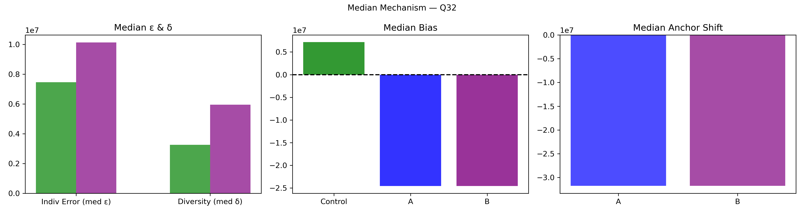

Question Q32: Movie magic! How much will the Top 10 films in North America gross at the box office on Monday?
Super Summary
================================================================================
QUESTION Q32: 05_Export_0713_stats_WX9D1I5WWT.csv
Movie magic! How much will the Top 10 films in North America gross at the box office on Monday?
Truth = 24575462.0
N_ctrl = 168 N_ext = 70
================================================================================
[1] COLLECTIVE ERROR (E)
Control Ec: 18279068.9830 ± 7067105.3598
CI = [ 7404607.1200 , 34018651.2314 ]
Extremized Ex: 8248566.7128 ± 1169336.5665
CI = [ 5917186.2118 , 10579295.5964 ]
Difference (Ec - Ex) = 10030502.2702
Percent Change = 54.87%
Bootstrap:
P(Ex < Ec) = 0.9500
→ 95.0% of samples show extremized < control
[2] INDIVIDUAL ERROR (ε)
Control mean ε = 20645077.5298
Extremized ε = 10719477.8143
Percent Change = -48.08%
Welch t-test: t = 2.175, p = 0.03092
Cohen's d = 0.203
[3] DIVERSITY (δ)
Control SD = 58595087.5022
Extremized SD = 9904390.7827
Percent Change = -83.10%
Levene p = 0.2121
[4] ANCHOR DIAGNOSTICS
Anchor A = 42991006.0
Anchor B = 10973333.0
A_effective = False
B_effective = False
[5] EQUATION 6 CHECK
w_L = 0.5959 w_H = 38.4271
Delta = 1901870.6940
Criterion_L = True Criterion_H = False
Meets both = False
[6] δ–ε–E SCENARIO
Scenario: δ:down, ε:down, E:down
Mechanism Explanation: Calibration: anchors pull predictions inward toward the truth, reducing both individual error and diversity and improving collective accuracy.
================================================================================
FINAL INTERPRETATION (with actual figures)
================================================================================
For Q32, collective error shifted from 18279068.98 to 8248566.71 (54.87%). Bootstrap = 95.0%. Individual error changed by -48.08%, diversity changed by -83.10%. Scenario = δ:down, ε:down, E:down. Equation 6 feasibility = False.
================================================================================
Mean Mechanism Plot

Median Mechanism Plot
